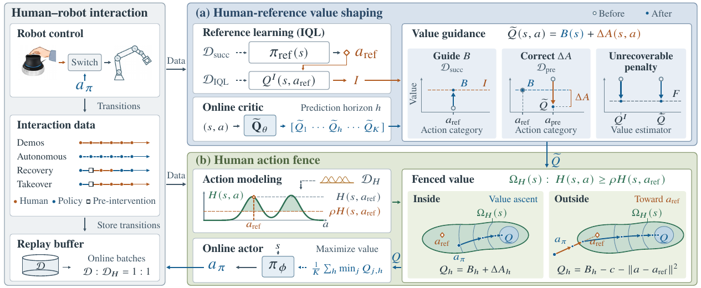
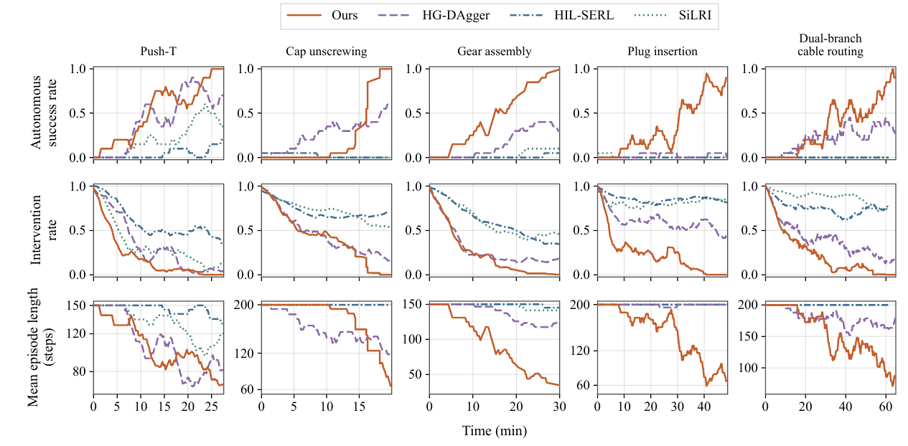
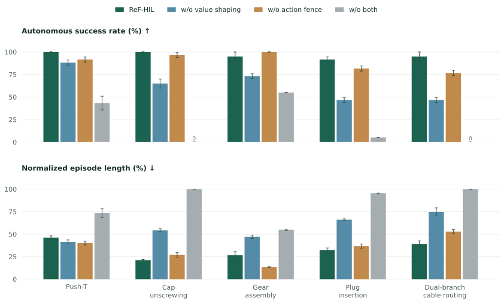

A reference for learning value.
An independent IQL reference learns from successful human experience. It guides reference-action values, while intervention feedback lowers the relative value of preceding autonomous mistakes.
REAL-WORLD ROBOT LEARNING
for Efficient Human-in-the-Loop Reinforcement Learning
Learn from human experience.
Leave room for policy improvement.
Anonymous submission · Under review
RESEARCH SUMMARY
Human-in-the-loop reinforcement learning combines autonomous learning with human demonstrations and online corrections. However, insufficient use of successful human experience in value learning prolongs costly real-world training, while persistent imitation penalties can limit value-driven policy improvement.
ReF-HIL uses an independent human-derived value reference to guide online value learning and incorporates local corrective feedback. A learned Human Action Fence defines a neighborhood for value-driven policy optimization, without imitation penalties inside it. Experiments on five real-world manipulation tasks show improved overall learning efficiency and higher autonomous success compared with the evaluated baselines.
THE IDEA
Successful human experience can do more than provide actions to imitate. ReF-HIL uses it to shape what the critic learns and where the policy explores.
An independent IQL reference learns from successful human experience. It guides reference-action values, while intervention feedback lowers the relative value of preceding autonomous mistakes.
A learned human-action neighborhood constrains exploration. Outside, updates point toward the reference. Inside, value gradients guide the policy without an imitation penalty.

IN THE REAL WORLD
From contact-constrained motion to precision assembly and long-horizon cable manipulation, using a UR5e and visual observations.
Training and evaluation · playback speeds are labeled in the video
TASK 01 / 05
Push a T-shaped block into its target pose.
Examples of recovery from disturbances and task errors.
Training and evaluation · playback speeds are labeled in the video
TASK 02 / 05
Grasp and unscrew a bottle cap until it detaches.
Examples of recovery from disturbances and task errors.
Training and evaluation · playback speeds are labeled in the video
TASK 03 / 05
Insert a gear shaft and mesh it with the neighboring gear.
Examples of recovery from disturbances and task errors.
Training and evaluation · playback speeds are labeled in the video
TASK 04 / 05
Pick up a plug and insert it into a power-strip socket.
Examples of recovery from disturbances and task errors.
Training and evaluation · playback speeds are labeled in the video
TASK 05 / 05
Grasp and route two deformable cable branches into their slots, in order.
Examples of recovery from disturbances and task errors.
Results are reported in the manuscript. Training clips include human assistance; the success rates summarize separate autonomous performance measurements.
WATCH THE EXPERIMENTS
The full project video covers training, autonomous disturbance cases, and comparisons across all five tasks.
2 min 58 sec · Playback speeds are labeled in the video. Motivation footage from prior work is credited in the video.
BENCHMARK COMPARISON
Comparison with HG-DAgger, HIL-SERL, and SiLRI on the five manipulation tasks.
| Method | Push-T | Cap unscrewing | Gear assembly | Plug insertion | Cable routing |
|---|---|---|---|---|---|
| ReF-HIL | 100.0 ± 0.0 | 100.0 ± 0.0 | 95.0 ± 5.0 | 91.7 ± 2.9 | 95.0 ± 5.0 |
| HG-DAgger | 86.7 ± 2.9 | 76.7 ± 2.9 | 38.3 ± 2.9 | 5.0 ± 0.0 | 5.0 ± 0.0 |
| HIL-SERL | 16.7 ± 2.9 | 1.7 ± 2.9 | 6.7 ± 2.9 | 0.0 ± 0.0 | 0.0 ± 0.0 |
| SiLRI | 55.0 ± 5.0 | 81.7 ± 2.9 | 10.0 ± 0.0 | 0.0 ± 0.0 | 0.0 ± 0.0 |
Mean ± sample standard deviation across evaluation batches, not independent training runs. Table I of the manuscript. Download table data ↗

Removing value shaping reduces success across all five tasks. The action fence helps on four tasks; gear assembly benefits from unconstrained exploration in this ablation.
